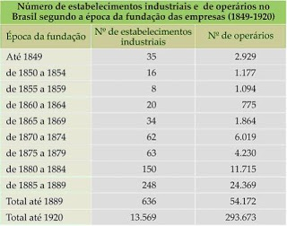
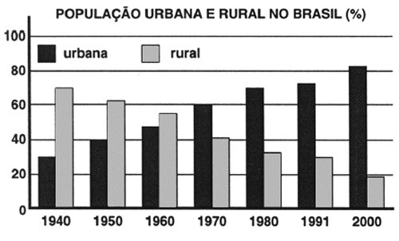
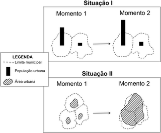
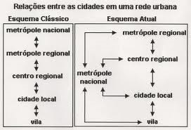

1) Observe as imagens abaixo:
a) Como a Revolução Industrial mudou a paisagem dos lugares?
b) E a vida dos trabalhadores?
2) Observe a tabela abaixo:

a) Em qual século e em qual continente aconteceu a Revolução Industrial?
b) Quando surgiram as primeiras indústrias no Brasil?
c) Podemos dizer que o Brasil se industrializou quando? Explique.
3) Leia atentamente o gráfico abaixo:

a) Aproximadamente qual era a porcentagem da população urbana e rural do Brasil em 1940 e em 2000?
b) Quando foi que o Brasil se urbanizou? Por quê?
4) Observe a tabela abaixo:
| Região | 1950 | 1970 | 2000 |
|---|
| Sudeste | 44,5 | 72,7 | 90,5 |
|---|
| Centro-Oeste | 24,4 | 48,0 | 86,7 |
|---|
| Sul | 29,5 | 44,3 | 80,9 |
|---|
| Norte | 31,5 | 45,1 | 69,9 |
|---|
| Sudeste | 44,5 | 72,7 | 90,5 |
|---|
| Brasil | 36,2 | 55,9 | 81,2 |
|---|
Fonte: Estatísticas Históricas do Brasil: séries econômicas, demográficas e sociais de 1950 a 1988 2.ed. Rio de Janeiro: IBGE, 1990, p 36-7; Anuário estatístico do Brasil 2001, Rio de Janeiro: IBGE, 200, p. 2-14 e 2-15
a) Qual região brasileira se urbanizou primeiro? Por quê?
b) E quais regiões se urbanizaram mais recentemente (2000)? Por quê?
5) Observe a ilustração abaixo:

a) Leia a legenda e explique o que está representado na situação I e II.
b) Qual das duas situações ilustra a conurbação? Explique.
6) Observe o esquema abaixo:

a) O que mudou na relação entre as cidades propostas no “Esquema Clássico” e no “Esquema Atual”?
b) Explique como a cidade de São Paulo se enquadra no “Esquema Atual”.